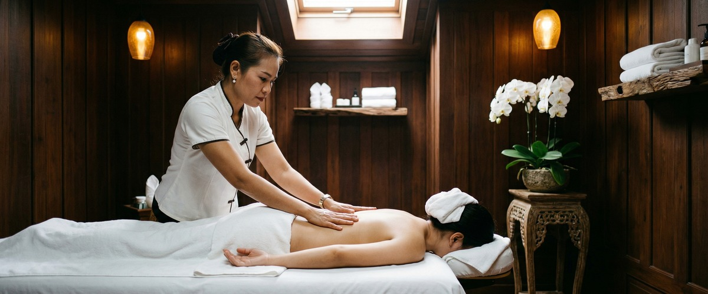
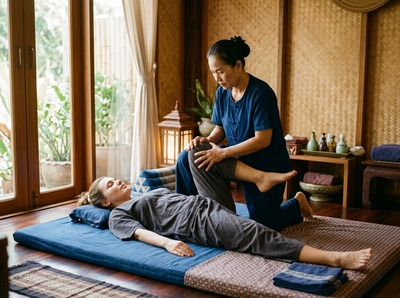

If you carry tension in your neck, back, or shoulders and want more than just surface relaxation, Thai oil massage in Glasgow at Serendipity Massage Therapy & Wellness offers something genuinely restorative.

This is a treatment that works on the body, not just the mood.
Thai oil massage blends the smooth, rhythmic strokes of oil-based massage with the targeted pressure of traditional Thai bodywork. Warm, natural oils are applied to the skin, allowing the therapist to use deeper, more fluid movements across the muscles and soft tissue.
Unlike traditional Thai massage — which is done fully clothed and focuses on assisted stretching — Thai oil massage uses gliding strokes, kneading, and gentle compression to release tension and nourish the skin.

The result sits between relaxation and deep therapeutic work. The oils soften the tissue and allow precise, sustained pressure into areas of chronic tightness. The rhythm of the strokes helps the nervous system slow down.
Thai oil massage suits people who hold tension physically but find deep tissue work too intense. Office workers, people managing chronic stress, and anyone who needs a full reset will benefit.
It is also a great choice for first-time clients. You get the results of Thai technique without the more vigorous stretches of a traditional session.
Your therapist will start with a short consultation. They will ask about any areas of concern and your preferred pressure level. You will be asked to undress to your comfort level — typically to your underwear — and will be covered with towels throughout.
Sessions run from 60 to 90 minutes. The pace is deliberately unhurried.
Using warmed oils chosen for your needs, your therapist will work across the full body with gliding, kneading, and rhythmic compression strokes. Many clients drift close to sleep during the session.
Afterwards, most people feel deeply calm, with looser muscles and a clearer head. You can book your Thai oil massage online and choose the session length that works for you.
At Serendipity Massage Therapy & Wellness, every Thai oil massage is delivered by a trained therapist using techniques developed by head therapist Jariya Malone. We are on Hope Street in Glasgow's city centre, easy to reach from offices and communities across the G2 area and beyond.
Whether you are visiting for the first time or returning as a regular client, the standard of care is the same: skilled, considered, and focused on what your body needs that day. Reserve your session and give your body the attention it has been asking for.
Yes, unlike traditional Thai massage, Thai oil massage is applied directly to the skin. You will be asked to undress to your underwear and will be covered with towels throughout the session.
Only the area being worked on is uncovered at any time. Your comfort and modesty are always respected.
Sessions at Serendipity typically run for 60 or 90 minutes. If it is your first visit or you are carrying a lot of tension, a 90-minute session gives the therapist time to work across the whole body without rushing.
You can select your preferred duration when you book online.
Most clients leave feeling deeply relaxed, with less tension and a quieter mind. Some people feel pleasantly drowsy for a short time afterwards — a normal response to the nervous system slowing down.
Drinking water after your session helps your body continue to benefit from the treatment.
For general stress and tension, a session every two to four weeks works well for most people. If you have a specific area of chronic tightness or are going through a stressful period, your therapist may suggest coming more often at first.
A single session delivers real results. The benefits build with regular treatment.
Traditional Thai massage is done fully clothed on a mat. It uses assisted stretching, acupressure along sen energy lines, and rhythmic compression.
Thai oil massage applies warm oils to the skin and uses flowing, gliding strokes alongside targeted pressure. Both are therapeutic, but Thai oil massage tends to feel gentler and suits clients who want deep muscle work combined with skin care.
In most cases, yes. Thai oil massage can be adjusted across a full range of pressure — from soft and soothing to firm and targeted — making it suitable for most bodies and conditions.
Let your therapist know about any injuries, recent surgery, or areas of sensitivity before the session. They will tailor the treatment and can focus on or avoid specific areas as needed.